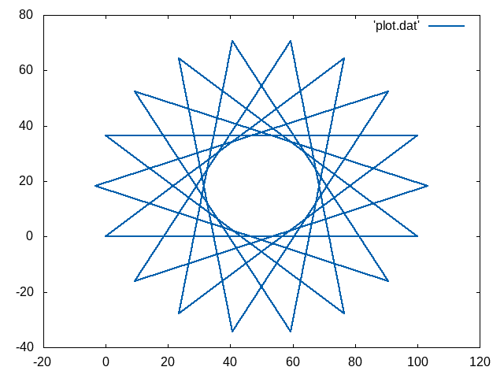

Turtle Graphics Example
Contents
Turtle Graphics Example#
Turtle graphics is a very basic graphics mode that has been used a lot in computer theory and education. It is a very simple model in which computer graphics are generated by a small turtle (also known as the cursor) by drawing a long and single connected line.
This can be used to learn imperative programming and recursive programming in a more visual way.
Some background is given on Wikipedia
Implementation in C#
As C and C++ do not contain graphics functionality in the core of the language (though high performance graphics is not far away through OpenGL and Vulkan and high quality graphics is provided by cairo, we again rely on gnuplot to help us with visualizing scientific data.
The gnuplot script we are providing just requires a text file of coordinates. That is a file in which every line is considered a point consisting of two floating point numbers separated by a space.
The special aspect here is that we are not going to use printf (though we could by using the piping mechanism like
./turtle > turtle-graphics.dat
but we open a file. Therefore, we rely on fopen. fopen returns a pointer (you don’t need to know what this is for now), but it returns the special value NULL if something is wrong. If not, there is a printf-like function fprintf
which we can use to print into this file. The first argument is said file pointer.
The file turtle.cpp implements everything. There are three global variables for the pose of the turtle: x, y, and angle. These are updated by two functions: move() which moves by a distance (if not given a default distance of one is taken). This uses cosine and sine functions and does convert angle to radians due to the library functions cosand sin being in terms of radians while many people think in degrees.
This conversion is simple: you divide radians by \(2\pi\) as this brings you a fraction of the circle (like a percentage where 1 means once around the circle, 0.5 means halfway around). And we multiply this with 360. In the implementation, we cancel out a factor of two and divide by \(\pi\) in order to multiply by 180.
Change the program to generate awesome turtle graphics, we will post a few tasks on the web page.
#include<stdio.h>
#include<math.h>
double x;
double y;
double angle; /// in degrees
FILE *f;
void move(double len=1)
{
x = x + len * cos(angle / 180.0 * M_PI);
y += len * sin(angle / 180.0 * M_PI);
if (f != NULL)
fprintf(f, "%f %f\n",x,y);
}
void turn(double by)
{
angle += by;
// this is completely unneeded, but might be nice for debugging and is a common pattern
// it is only efficient when you are doing moderate turns. For massive turns (e.g., angle=10e9) this
// will be long loops.
while(angle > 360.0) angle -= 360;
while (angle < 0) angle += 360;
}
int main()
{
f = fopen("plot.dat","w"); // this will overwrite
if (f == 0) {
perror("File Problem: ");
exit(-1);
}
// init the turtle
x = y=angle=0;
// do some turtle graphics (this is a star, is it?)
for(int i=0; i < 100; i++){
move(100);
turn(140 );
}
fclose(f);
return 0;
}
Visualizing the Turtle Graphics#
To get you started, we provide a script that generates a PNG file (well, this is handier for the lecture as we typically work remotely on a Linux machine).
set term png
set output "/var/www/html/gnuplot.png"
set style line 1 \
linecolor rgb '#0060ad' \
linetype 1 linewidth 2 \
pointtype 7 pointsize 0
plot 'plot.dat' with linespoints linestyle 1
By removing the first two lines (activating PNG and giving a filename), gnuplot should pop up with a window.
The script is easy: we just give some visualization parameters and draw all line segments and points from plot.dat.
As pointsize is zero, you don’t see points, but sometimes you might want to activate it, for example, set it to 1.5.
If you did it the right way, you have a nice star from the reference implementation looking like this:

The Makefile#
It is very common that while developing a system, a few things have to be called in the right order. GNU Make is a very common tool that allows you to automate such things.
In its simplest form, it is given as a text file called Makefile which lists at least one target. A target is just a nickname for a set of tasks or a name of a file if a file is to be generated as the outcome of the target.
all:
g++ -o turtle turtle.cpp
./turtle
gnuplot graphics.plt
In our minimal example above, the nickname is all. If you invoke make, it will look for the main target (either one given on the command line or the first target in the file) and will try to build it. Therefore, it first builds all dependencies (here are none specified, we will refine this Makefile later). When the dependecies are refreshed, it will run all lines. Each line needs to start with a TAB character (no spaces!) to group them together. And make is really picky, if the first line fails, it will abort the target.
In other words:
make
will try to make the target all by compiling turtle.cpp into turtle, then running turtle, then running gnuplot. If any of those fails, an error is generated and subsequent aspects are not performed anymore.
You will see more powerful Makefiles through the time…